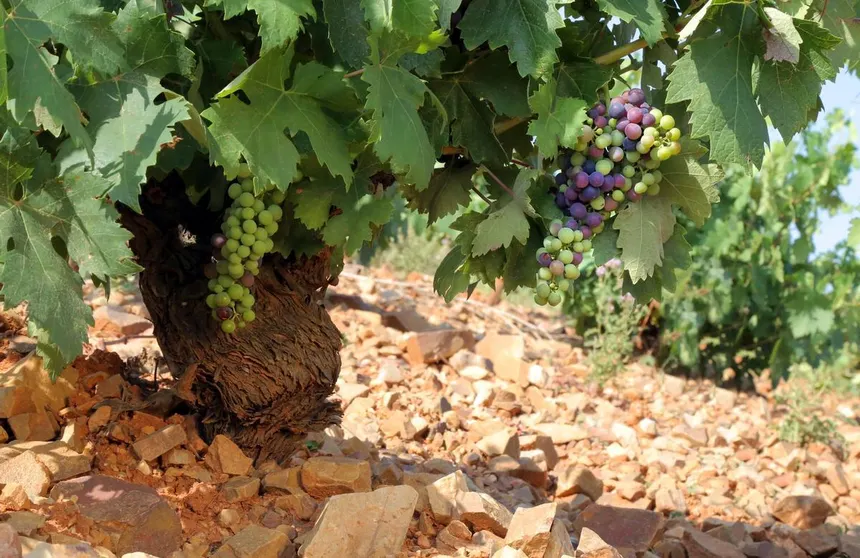

Un paso más en nuestro compromiso con el planeta: presentamos la primera botella completamente libre de plásticos y materiales contaminantes, reduciendo los residuos en toda nuestra cadena de valor.
La industria del vino está cambiando en positivo y en Tierra Vieja hemos querido liderar esta transformación. Después de años de investigación junto a expertos en materiales sostenibles, hemos desarrollado un envase 100% biodegradable diseñado a partir de fibra de lino y resina natural.
Este innovador envase pesa significativamente menos que una botella de vidrio tradicional, lo que también reduce drásticamente las emisiones de carbono durante su transporte logístico. Tras su uso, el envase puede ser compostado, devolviéndolo a la tierra que lo vio nacer y cerrando así el ciclo vital del producto de una manera respetuosa con nuestro ecosistema.
"No podíamos seguir envasando de la misma forma que en el siglo XX. El vino nace de la tierra y a la tierra debe poder volver de forma limpia." — Elena Ruiz, Responsable de Sostenibilidad
¿Qué hace único a este envase?
La adopción de esta innovación significa no solo un hito tecnológico sino una serie de beneficios directos para el entorno y la calidad final:
Compostable en 90 días
En condiciones de compostaje industrial, el material se descompone completamente, sin dejar microplásticos.
70% más ligero
Su ligereza optimiza las labores del transporte y despachos, reduciendo significativamente la huella de carbono.
Conserva la Calidad
Un recubrimiento orgánico interior especial garantiza que las propiedades organolépticas no se alteren.
Liderando el cambio
La primera línea que utilizará este envase será nuestro joven Garnacha, un vino vibrante, afrutado y fresco que ahora también será un símbolo central de nuestra filosofía medioambiental. Este nuevo lanzamiento refuerza nuestra certificación de carbono neutro obtenida a principios de año.
Te invitamos a ser parte de este importante hito y degustar la calidad intacta de nuestro vino en su formato más innovador y natural. El futuro y el respeto por nuestro entorno empiezan en las decisiones de hoy.
"El mejor vino del futuro será aquel que logre borrar su propio rastro en la naturaleza." — Carlos Benedí, Enólogo
